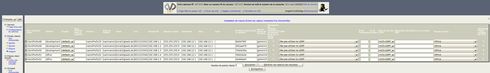

suivant:
Changer le nombre de
monter:
Outils de masse
précédent:
Options de générateur
Table des matières
Entrer les valeurs restantes/Vue d'ensemble
Une vue d'ensemble de tous les postes client à créer est affichée. Veuillez remplir les champs vides ou les modifier si besoin est et corriger les valeurs fausses.

Sous-sections
Changer le nombre de postes client
dodger 2012-12-10